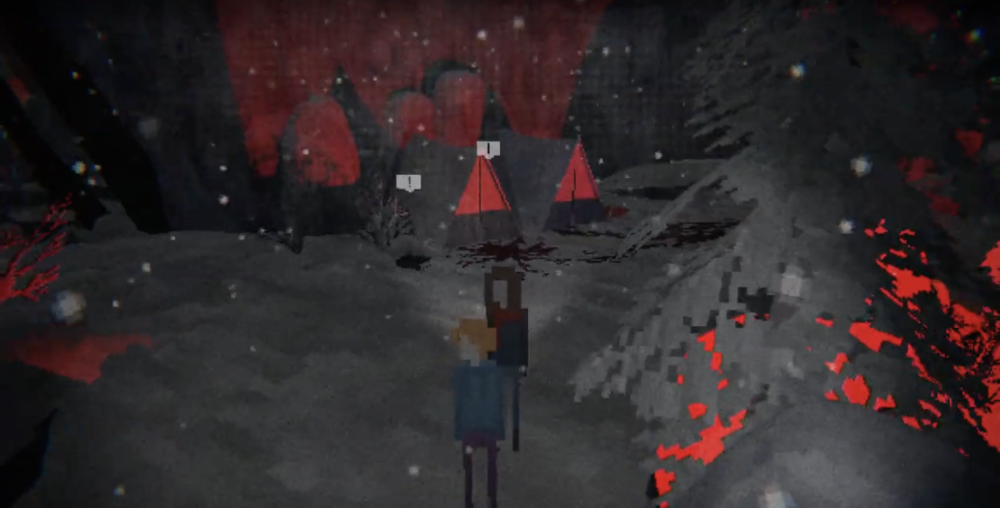

Zero Visibilty is an eldritch, physcological indie horror game.
It follows four friends, Sarah, Boyd, Elaine, and Leo as they all drive to a moutain not far from their home and attend the hot springs that it houses.
On the way up, a snow storm hits and the group finds themselves getting lost.
They have to abandone their car soon after, and try to find somewhere to stay while the snow storm hits.
While walking, a shadow creature (in my diagram I named it the shadow guardian) takes Elaine, and they both disappear.
As they continue to travel, the group gets picked off one by one by the creature.
As time passes, Sarah finds herself more and more inclined to go to the top of the moutain, almost like something is calling to her.
Graphics and Mechanics
Most of the game is made up of walking around and finding notes, using WASD and a mouse. There are not any complicated puzzles or anything like that either.
I feel like I cannot
fairly judge if the controls were messed up or not, because I have a mac, and I know it is not the best laptop to use for gaming.
I also was using my track pad in place of a mouse which made it a bit difficult to move around at times.
The graphics are a mix 2D and 3D, which was interesting to see. All of the characters were 2D and simplistic.
When a text box pops up, there is a bit more detail to the faces of the characters, but even then, it is still pretty simple.
The landscape is the best design when it comes to graphics in this game.
These assets are 3D, and heavily detailed,
especially for a game that was made by a single person.
The dev did really well with coloring the setting. The main colors used are
blues, blacks, whites, and grays, to give it a more colorless look:
In many of the scenes, though, red is added to clash with the dominate colors.
This helps create a unsettling, foreboding feel to it.

Game Interactions
The main thing you interact with in the game is pick up notes to read them.
There, they will give you more background information on what is going on in this game.
Also, towards the end of the game you use boards of wood to create a makeshift bridge to cross.
You do this by finding a hammer while you are walking around, and hammering the boards on a preexisting structure.
Sound Design
The sound design in this game is amazing. The audio and music put into the game was made mostly for atmospheric purposes.
The dev was able to create a cold, stormy atmosphere with the sounds they input into the game.
The music that was played when the shadow creature kidnapped Somone was a bop as well.
Though it sort of took away from the scary aspect of witnessing a creature take someone and both of them disappearing.
The audio at the end cutscene was done well too.
I think it was like a reverb sort of thing,
and the dev did well making it sound terrifying without it being too loud or painful for the ears.
Characters
In this game you mostly play as Sarah, and while you walk around, the other three main characters follow behind you.
In the beginning of the game you move around a car rather than the characters themselves.
Character List
Sarah Arguably the main protagonist in the game.
She is a natural leader, the rest of her friends follow her while she walks through the moutain,
and she calls most of the shots in the game.
Her main priority at the beginning of the game is to find a way off
the moutain and/or find some help because the four of them are stranded in the snow.
The longer she stays there though, her motivations shift to finding out what is at the top of the moutain.
This ends with her being used as a sacrfice to the god-like creature at the top of the moutain.
The creature uses her to break the chains that kept it trapped on the moutain, and ultimately destorys the world. Boyd The second to last person to be killed in this game.
He starts out as a carefree jokester (it really irritated me when he acted like this),
but as their situation becomes dire,
he becomes more cautious and anxious.
He constantly protested Sarah's desire to continue up the moutain,
and just as their about to get to the top, the shadow guardian takes him and kills him.Elaine First person to be kidnapped by the Shadow Guardian and killed.
Her personality didn't stand out ot me much, but she did tell Boyd to shut up a lot, so she has my respect.Leo He was the calm force in the group.
Whenever anyone got upset, he tried to reassure them.
He was the second person to get kidnapped by the shadow guardian.Mysertious Man While the gang was wondering around the moutain, they came across a wooden cabin. They go to the door to see if anyone is inside, and a voice does speak to them. It is revealed to be a man who has been stuck on the moutain for years. He urges them not to go looking for Elaine or go to the top of the moutain.
If they stay away, he says the shadow guardian will not bug them.
Concerned for their friend, they ignore his warnings and keep going.The Shadow Guardian It is revealed in one of the notes that there used to be more than one of these creatures, but now there is only one left.
It appears to be the main antagonist of the game because of it continually kidnapping our main cast one by one.
It is revealed by the end, though,
that it was actually trying to stop people
from freeing the Esoteric god because once it is freed, it will destory everything.
In the end, Sarah kills it and goes to the godEsoteric God A being that has been imprisoned in the moutain by the shadow guardians.
It tries to compell people to go to the top of the moutain because if it can get someone to appear before it,
it can use them as a sacrifice to free itself from its shackles.
In the end, Sarah is the one that frees it. After it is freed, it appears in the sky,
and sucks up everyone on earth and presumably kills them all.